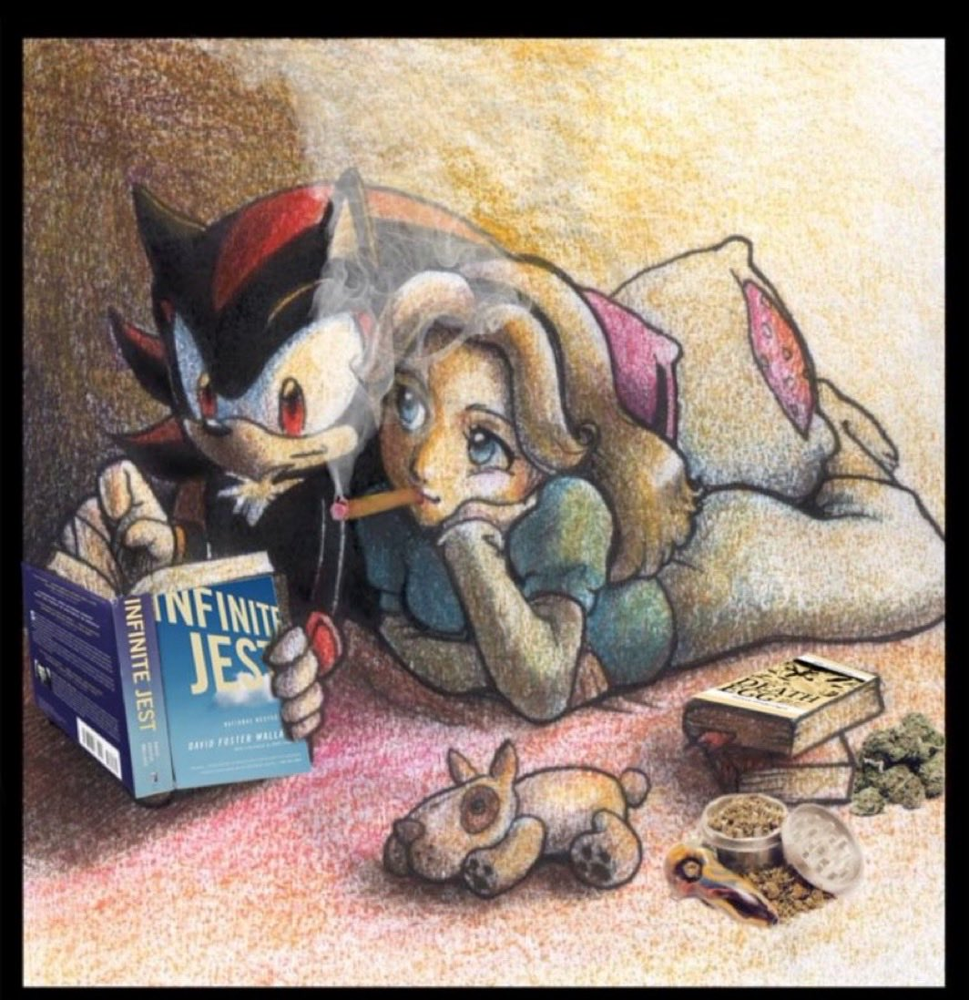

Obligatory Infinite Jest Theory
Show me your feetnotes
Mar 19, 2024
There are only a handful of experiences that are universal to the male experience: fantasizing about moving to the mountains and training to become the worlds greatest swordsman, spending a summer watching foreign/classic films and feeling superior to all your friends for having done so, and of course reading Infinite Jest and taking every woman in your life conversationally hostage to let her know your thoughts about it. Since I’ve noticed an uptick in female readers lately it is my duty as a college educated male who likes to read to let my audience know that I have not only read the book (twice) but I also have some thoughts about it. I welcome my male readers to steal these thoughts the next time you find yourself in conversation with a woman you want to ensure never sees you as a viable sexual candidate ever again and that her nether regions never fully recover from how bone dry talking to her about this will get her.
Question
Why does Infinite Jest use single quotes for dialogue? Wallace from all indications is a writer obsessed with the english language along with the grammatical and stylistic laws that govern language in general. This seems to indicate that this choice to use single quotes is not purely aesthetic but instead is an accurate use of punctuation within the novel. This use of single quotes is also not universal in his writing as Wallace uses double quotes in his first novel The Broom of the System. In a book spanning over a thousand pages with each page containing an immense amount of detail and precision, writing off this decision to use this form of punctuation as nothing more than an unimportant meaningless stylistic choice feels incredibly lazy and counterproductive. In a novel that begs you to put pieces of the story together in order to gain a complete picture of what happens at the end every detail and especially those that stand out as odd or out of place demand to be examined. So the question remains, why the use of single quotes? I believe the reason for this is because Infinite Jest is not a traditional novel (duh), where the narrator is a kind of out of universe God like figure who acts as an objective detached story teller providing the reader with the plot details but rather the narrator in Infinite Jest is in fact a character that exists within the story itself. Traditionally in the english language single quotes are used to indicate a second layer of quotation. If you are writing a line of dialogue where a character quotes another character it is customary to indicate this through the use of use quotation marks. This should signal to any carful reader that Infinite Jest is not just a story but a story within a story, a book told to us by a character who is never explicitly identified as the author of the book we are reading. So who is this mysterious narrator?
Narrator
Despite the constant shifts in perspective that occur throughout the novel every vantage point the book takes on still maintains the kind of otherworldly distinct Wallaceian grammatical autism and style that seems to be coming from a unique singular voice. This is probably why most readers never even consider the possibility of a narrator other than Wallace himself because the style so clearly belongs to Wallace. But, there is another character in the book who shares Wallace’s vocabulary, attention for grammatical detail, unique writing style and a strict academic mother who studied english and imparted her knowledge onto her children. I am of course talking about Hal. If one were to disregard the use of a single quotes in the novel the similarities between Hal and DFW could be seen as inconsequential or Hal could just be seen as a stand in for Wallace within the novel but coupled with what we now know about Infinite Jest being a story within a story it seems that this similarity also makes Hal the obvious candidate for the possible narrator since he is almost indistinguishable from the literal author of Infinite Jest. But this is not yet a satisfactory case since many of the events that take place within Infinite Jest happen without Hal’s knowledge and occur from the perspective of whatever character the story is following including their inner monologue which Hal would not have access to, and on top of all of this it seems that at the end of Infinite Jest Hal is incapable of speaking meaning he cannot be the one telling this story or at least not the one being quoted. So who is the narrator? While I believe that it is Hal that is writing the novel I believe the one that is telling the story which Hal is transcribing and putting into his own words, the true narrator of the novel is the man who created the original Infinite Jest, the movie which shares its title with the book, Hal’s father James Incandenza. While Hal is the author of the novel it is James who provides the actual narrative and is the one Hal is quoting in his text. Thanks to James’s status as a wraith he is able to be anywhere in the world and inhabit the mind of anyone he choses which explains both the birds eye view perspective of the narration and also the stylistic changes that occur within the novel since James is recounting the story from the perspective of the character he is following. It should also be noted that while I believe that James is the one recounting the main story of Infinite Jest I believe Hal to be the sole author of the endnotes. Anyone who has read Infinite Jest knows Hal has an encyclopedic knowledge of almost everything (except math) and a kind of cold analytic disposition which seems to fit with the style of the endnotes which read like dry excerpts quoted directly from a encyclopedia. This coupled with the error given in an endnote where Hal erroneously states that the definition of a derivative is “nx + n^(x-1)” rather than nx^(x-1) seems to suggest that it is Hal who is adding these supplemental pieces to J.O.I.’s story since it is mentioned several times that Hal struggles with calculus and has shown throughout the book to add these kind of factoids to any conversation he is involved in. Since James was a gifted physicist it seems unlikely he would have made this mistake and it seems just as unlikely that Wallace himself would have made this error whether or not you think highly of his mathematic abilities it seems clear that a novel with this much attention to detail wouldn’t have failed to correct a simple error regarding the definition of a derivative unless it was intentional and trying to provide evidence that the author of this footnote along with every other footnote was written by Hal.
Transmigration of the Soul
There is a passage in Infinite Jest discussing the film of the same name where it is explained that the woman who killed you in your past life will give birth to you in the next. This theme of rebirth or transmigration is constant throughout the novel, there is even a character named Madam Psychosis which is obviously a reference to metempsychosis which is where the soul takes its journey into a new body after death. This theme is one of the other main reasons I believe J.O.I. is the narrator of Infinite Jest because authoring the novel allows him not only to transmigrate into the book we all love but because it allows Infinite Jest itself to go through a similar process where it is transformed from film to book, from entertainment to anti-entertainment, and from monologue to dialogue. James no longer haunts the halls of the hospital and Gatley or Enfield and Stice, he is now haunting you within the words of the text and the once deadly solipsistic film that acted as a poisonous drip of dopamine and pleasure is transformed into a active communal conversation that questions the very nature of entertainment itself. I have seen some theories that believe the anti-entertainment was literally inside of J.O.I.’s head. This misconception comes from the conversationalist scene in the beginning of the book that was also made into a film where James tells Hal “'That your quote-unquote "complimentary" Dunlop widebody tennis racquets' super- secret-formulaic composition materials of high-modulus-graphite-reinforced polycarbonate polybutylene resin are organochemically identical I say again identical to the gyroscopic balance sensor and mise-en-scène appropriation card and priapistic- entertainment cartridge implanted in your very own towering father's anaplastic cerebrum”. This scene is often taken literally both by readers and the characters in the book which is why the following scene occurs where, “the sad kid is trying to scream at Gately that the important thing was buried in the guy’s head and to divert the Continental Emergency to start digging the guy’s head up before it’s too late, but the kid moves his mouth but nothing comes out, and Joelle van D. appears … while the sad kid holds something terrible up by the hair and makes the face of somebody shouting in panic: Too Late”. While not literally true the anti-entertainment that can divert the “Continental Emergency” does in a very Wallaceian way end up coming from J.O.I.’s head but it is not located in his skull but rather in his mind. So we see the need for transmigration for James to transform Infinite jest from poison to cure. It should also be noted that the initials of Infinite Jest (I.J.) mirror that of James Incandenza (J.I.) which although admittedly spurious seems to at least suggest that James is the narrator once one considers this looming theme of transmigration that is present throughout the novel. It also seems fitting that there would be no magical antidote that can solve the problem of addiction of which the entertainment exemplifies since this would contradict the messages of the book that it is only through work and through others that this resistance to entertainment and mindless pleasure can be achieved. Only through conversation, through dialogue can one transcend addiction whether it be the prayer, the unspoken dialogue taking place in a tennis match or through a book where a wraith like author invades your mind is transcendence possible. Only through this communal act and interaction with something higher than yourself is it possible that true transcendence can be reached which is another reason I believe that the book itself is the anti-entertainment and also written as a kind of collaborative conversation between J.O.I who always felt he could never speak to his son and Hal a boy who now can longer communicate to anyone but his father.
Ghost Words
When describing Gatley’s interaction with the wraith and the “ghost words” that appear in his mind the following passage is written stating, “Other terms and words Gately knows he doesn’t know from a divot in the sod now come crashing through his head with the same ghastly intrusive force”. This quote almost perfectly captures the feeling of reading fiction and particularly the feeling of reading Infinite Jest since all readers are familiar with encountering a new unfamiliar word in Wallace. Not only do they encounter unfamiliar words but unfamiliar stories, as the act of all fiction writing is like experiencing one long ghost word appearing in the mind of the reader where someone else’s voice intrude upon your psyche and present you with worlds, characters, and plots that would be otherwise foreign to you. I find the concept of the wraith interesting particularly in regards to authorship because of it’s relation to the main theme of the book which explores the difference and similarities between addiction and worship or the dichotomy between possession and absorption. In the very beginning of the book Hal states that, “I believe, with Hegel, that transcendence is absorption”. I find myself constantly coming back to this passage in Infinite Jest and it is my belief that Wallace saw absorption as the antidote to the plague of addiction which he saw spreading both in the world and in his own life. Although similar, possession is distinct from absorption in that one takes in another during the process of absorption implying a kind of voluntary nature to the act or at the very least it seems to suggest some level of autonomy where as addiction or possession implies a lack of agency which is why Gatley calls it “the spider” because it traps you in its web leaving you unable to move. One who is “in the zone” during a tennis match is not possessed but is instead one who is has reached a level of transcendence which is why you often hear athletes describe these moments by saying things like “the racket felt like an extension of myself”. They are not taken over by the sport but have instead integrated it into themselves, becoming one with it. This is why great athletes struggle to provide quality insight into their play. The game is a part of them it is not something separate it is why it is impossible to describe why you like the taste of something. What does it mean for X to taste sweet, what is sweet? It is so fundamental, such a part of our inner workings that we cannot describe it we only know that it is. This contrast between transcendence and absorption can also be seen in Ennet House where members are encouraged to give themselves up to something higher. This does not eliminate the autonomy of the residence in fact giving yourself to something greater actually requires a great deal of personal responsibility and voluntary action in the book such as daily prayer, meetings and boring menial routine. This autonomy is actually what many of the residence lacked while addicted and free to do as they liked before entering into AA. Like a tennis player members of AA in the book also struggle to explain why the program works. Many members can more articulately explain why it shouldn’t but this doesn’t matter, the point of the program is to make it a part of you no matter how contradictory or how stupid and illogical it seems the fact remains that it just works. Both the residence at Ennet House and the players at Enfield are both engaged in this process of “giving yourself to something greater”, both houses are attempting to fight back against the spider of addiction and the possibility of possession. James even possesses Ortho Stice to play against his addicted son which really showcases this dichotomy within the book between Hal’s battle between possession and absorption. The wraith functions as a bridge to get us past this seemingly insurmountable gap between us and other people, between solipsism and the minds of others. He is able to literally go inside the minds of strangers so he no longer has to wonder if there are minds that exist independent of his own. This I believe is also the job of the writer which I think Wallace believes as well which is why he chose to make James the narrator of the book. J.O.I is able to bring others out of themselves and away from solipsism and monologue and into dialogue, into absorption and transcendence rather than possession. It is only through this act of rebirth where he gives himself to something higher, the anti entertainment/infinite jest the book that he is able to transcend his own solipsism and his sons so that he can finally enter into conversation with him. The anti entertainment is not a MacGuffin it is not an item it is a process it is other people it is the transcendence that comes through absorption. Addiction eliminates the minds of others, the addict will betray his family best friend anyone, and the entertainment in the book causes people to abandon even their own physical bodies, all they care about is that next frame in the film. These are people fundamentally alone. I believe this is the point of fiction and the point of this book as a whole, to make contact with something higher whether it be an author, with a wraith, or with God.
“Life is like tennis. Those who serve best tend to win”